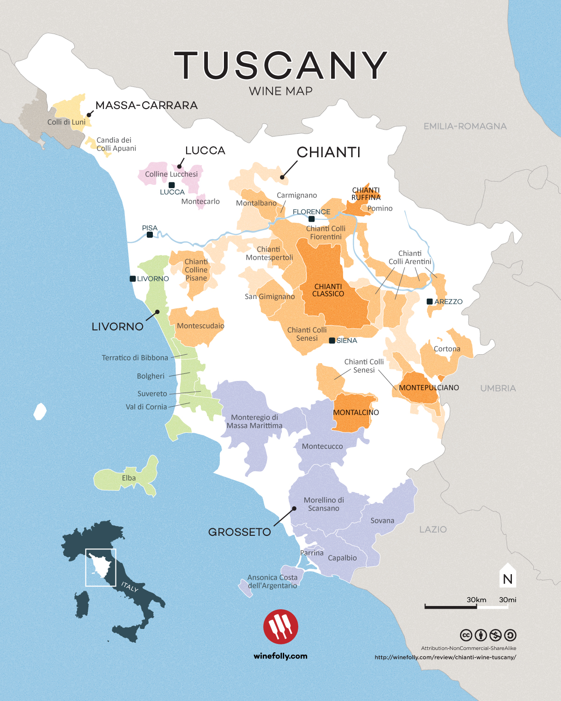
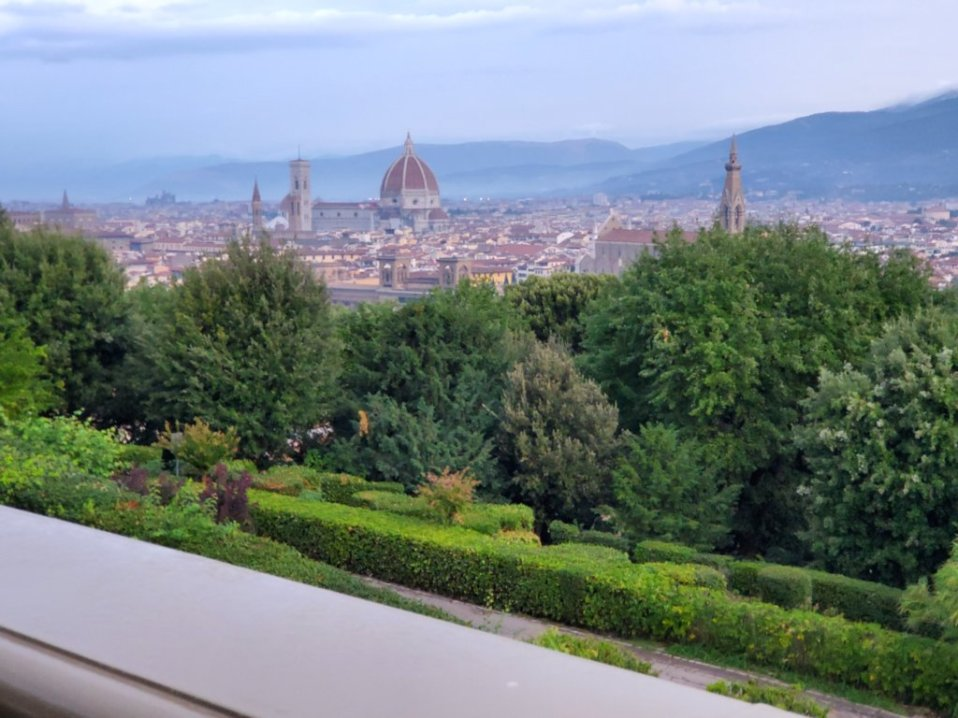
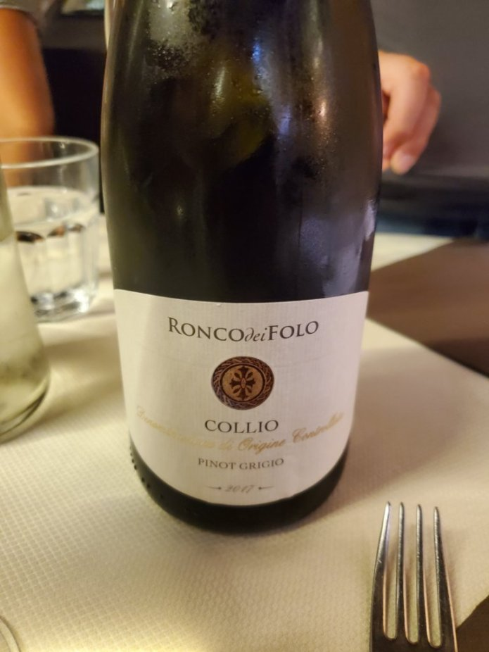

Reasons for Choosing Wine Culture While Abroad in Italy
When deciding what my capstone was going to be while studying abroad I wanted to think about something that
I had a personal interest in.  At first I was going to choose technology, but Italy is signifigantly behind
when it comes to modern computing technology.  Then I wanted to compare the cultures from the U.S and Florence.
This led me to eventually choose my capstone to be about wine culture. Another factor that played into this is
that I have had some wine training when I was working at Ruth's Chris. This oppurtunity would give me a chance to
explore a culture in which wine plays a pivotal role in the surrounding culture and that also places a great
importance on wine and the process surrounding it. 